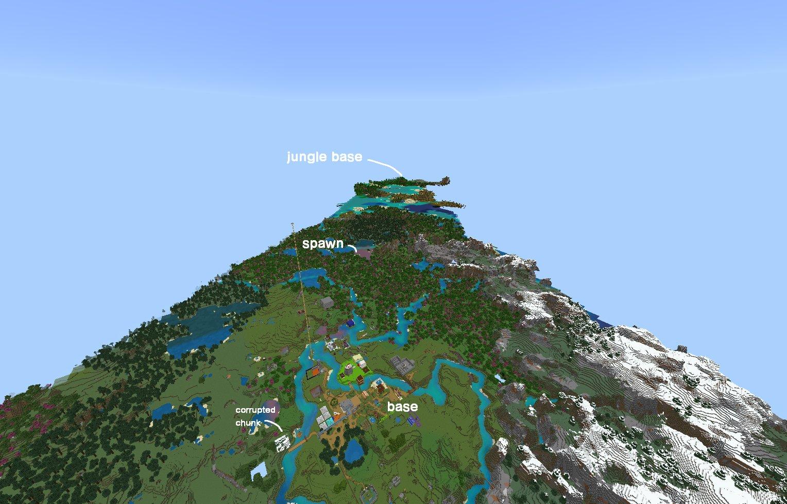

Editing the games\com.mojang\minecraftpe\options.txt file for Minecraft Bedrock and changing
gfx_viewdistance value you can enable render distances above what the game would normally allow!
NOTE
Thegfx_viewdistancevalue represents the amount of blocks you can see, not chunks. So a value of256would represent 16 chunks of render distance.

Here is a screenshot of my world after flying across lots of land!
If you were to load any more chunks, the game would crash due to the amount of RAM being utilised, this scene would use about 20GB of RAM.